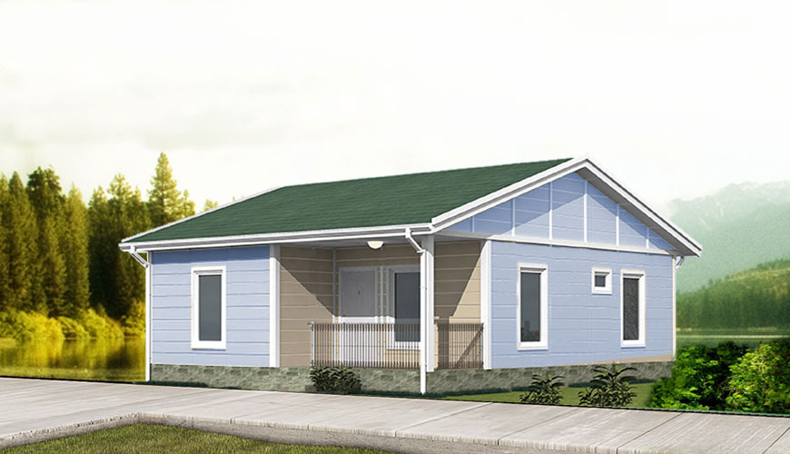

Javascript Design Patterns
Making the transition from learning to create an app with Ruby on Rails, to using Javascript to create advanced front-end features and communicate with a database backend, it becomes apparent that the strict architecture and other conventions provided by Rails, while often complex, helped us stay organised within the MVC framework, ultimately created by somebody else.
If we take the metaphor of actual architecture - it is as if we are creating a home out of a pre-fab house. In the case of Rails, it is MVC.

"A modular, transportable, prefabricated off site, factory built, self build, flat pack, unit."
With Javascript, however, one of the most creative features of using the language is that essentially, you are asked to design your own architecture.
While at the beginning this may start with a tangle of different functions, each doing what the programmer feels might most quickly get them to their desired outcome, it becomes apparent after a while that the resulting code becomes incredibly complex to read, let alone to be used by someone else.
This would be like building a bedroom when you need a bedroom, a bathroom when you need a bathroom - essentially you'd end up with a home like this.
Which door leads to the bathroom? When did I build the kitchen again?
In the process of refactoring my code and thinking about organisation from a big-picture perspective, I started to wonder how programmers would begin to approach the architectural project, and I found that a whole host of existing design patterns, almost like blueprints for houses, existed.
Each of the design patterns represents a specific type of solution to a specific type of problem.
- The Comprehensive Guide to JavaScript Design Patterns, Marko Misura
Architectural Design Patterns
For example, the variations on the Model-View-Controller pattern are known as literally, architectural design patterns. In general, architectural patterns separate out the application logic into separate parts, promoting modularity and ease of collaboration and reuse.
MVC (Model View Controller)
The standard in Ruby on Rails, where the model handles creation/modification of data in the database, the view gathers user information, user-DOM interaction, and the controller manages the interaction between the two.
MVP (Model View Presenter)
A variation on MVC, where instead of a controller that manages interaction between model and view, you have a presenter, that also handles the presentation logic. This means the presenter doesnt communicate directly with the view, it does so through another interface.
MVVM (Model View ViewModel)
This structure is used primarily in projects where separate teams of developers - those working on the user interface and those working on the application logic, maintain separate areas within the same codebase, allowing them to work simultaneously. The ViewModel is maintained by UI developers, and the Model and View by application developers.
Creational Design Patterns
With projects that are heavily object-oriented (involve a lot of objects), in order to work with them in an optimised, efficient way, this kind of pattern is focused on controlling the creation of objects.
You will recognise, for example, the following:
Factory Pattern
const Dog = function(name){
const dog = {};
dog.name = name;
dog.walk = function(){
console.log(this.name + " walks");
}
return dog;
};
This is an example of a function that generates a Truck object. With the factory pattern, one would use constructor methods or ordinary functions to define multiple instances that would need to be used.
Abstract Factory Pattern
Related to the Factory Pattern, the Abstract Factory Pattern also emphasises a way to create objects in a controlled manner. However, instead of single objects at a time under a class name, it would generate families of interrelated objects, some of which might have no names.
Structural Design Patterns
These patterns handle the relationships between objects, such that if some part changes, the rest of it doesn't have to change as well. In the way that React separates things into components that may or may not be interdependent, structural design emphasises independence of certain key elements.
Examples of this are:
Adapter Pattern
The adapter pattern allows classes whose interfaces wouldn't otherwise by compatible, by using adapter functions that would allow them to work together. The interdependence of these two objects, therefore, is the remit of this third-party object, the adapter.
For example:
For an object of a Shopping Cart:
function ShoppingCart() {}
ShoppingCart.prototype.add = function(item) {
var items = localStorage.getItem('cart');
if (items) {
items = JSON.parse(items);
if (items[item.id]) {
items[item.id].quantity += 1;
} else {
item.quantity = 1;
items[item.id] = item;
}
} else {
items = {};
item.quantity = 1;
items[item.id] = item;
}
items = JSON.stringify(items);
localStorage.setItem('cart', items);
return item;
};
If suddenly you were asked to change part of the code to save the cart to server storage instead of local storage, it might mess up this function, and all the places it has been used in the rest of your project. Therefore, it'd be better to handle that part of the function with an adapter that could save the cart to either local storage or server storage.
For example, it could look like this:
var localStorageAdapter = {
findAll: function() {
var deferred = new $.Deferred();
var items = localStorage.getItem('cart');
if (items) {
items = JSON.parse(items);
}
deferred.resolve(items);
return deferred.promise();
},
save: function(items) {
var deferred = new $.Deferred();
items = JSON.stringify(items);
localStorage.setItem('cart', items);
deferred.resolve();
return deferred.promise();
}
};
Credit for example: https://thejsguy.com/2015/10/16/the-adapter-pattern-in-javascript.html
Bridge Pattern
The Bridge pattern allows a client and a service, to work together with each component having its own interface. You might think of this as a double adapter structure, where both the client and the service have their own adapters in order to access each other.
For example, this might apply where you have a server calling to an API. However, the API will need a different adapter depending on what kind of server you are using (SQLite vs. Postgresql, for example), and the server itself will also need an adapter depending on the kind of API that is being called.
This is a highly abstract pattern, and ultimately quite rare.
This is by no means the comprehensive list of design patterns - there are hundreds. For every developer who has a tried and true method of structuring a project, there is a new blueprint to be added to the list. And as with real architecture, you can certainly try to use a combination of different patterns to suit your needs. Have fun building!
Resources to Read about Design Patterns
JS: The Right Way
Refactoring Guru: Design Patterns
Essential JS Design Patterns
Do Factory: JS Design Patterns